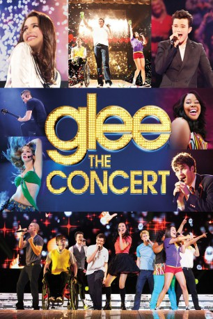

#5381 Glee on Tour - Der 3D Film
Alternativ: Glee: The 3D Concert Movie
 
 IMDB-Wertung: 5.4 / 10
IMDB-Wertung: 5.4 / 10  Metascore: 0
Metascore: 0 
Kevin Tancharoen, der bereits die Serie "Fame" für ein Leinwand-Comeback generalüberarbeitete, zeigt auch im Kinofilm nach der höchst erfolgreichen US-Serie mitreißende Tanz- und Gesangsszenen. Nur dass hier die Live-Atmosphäre dominiert, dokumentiert er hier das Team bei seiner Konzerttournee bei seine Auftritten on stage ebenso wie backstage.
Jahr: 2011
Dauer: 83 Minuten
FSK:
Land: USA Studio: 20th Century FoxTonspuren: DTS - ,
Untertitel: Deutsch,
Auflösung: 1080p (1920x1080) Größe: 6717 MB
Genre: Musik, Dokumentation
Regisseur: Kevin Tancharoen, Jennifer Arnold
Drehbuch: Sean Ellis
Soundtrack:
Darsteller:
 Dianna Agron als Quinn
Dianna Agron als Quinn- Chris Colfer als Kurt
 Darren Criss als Blaine
Darren Criss als Blaine- Kevin McHale als Artie
- Lea Michele als Rachel
 Cory Monteith als Finn
Cory Monteith als Finn- Heather Morris als Brittany
- Amber Riley als Mercedes
- Naya Rivera als Santana
- Mark Salling als Puck
- Jenna Ushkowitz als Tina
 Harry Shum Jr. als Mike
Harry Shum Jr. als Mike- Chord Overstreet als Sam
- Ashley Fink als Lauren
- Jon Robert Hall als Warbler
- Riker Lynch als Warbler
- Titus Makin Jr. als Warbler
- Curt Mega als Warbler
- Nick Baga als Dancer
- Courtney Galiano als Dancer
- Alexandra Nicole Hulme als Dancer
- Kc Monnie als Dancer
- Kellen Sarmiento als Mini Warbler
 Jane Lynch als Sue Sylvester , scenes deleted
Jane Lynch als Sue Sylvester , scenes deleted- Damian McGinty als Himself - Audience , uncredited
- Ryan Murphy als Backstage Interviewer , uncredited
- Jaymz Tuaileva als Warbler
- Justin de Vera als Dancer
- Hannah Douglas als Dancer
- Kyle Hill als Dancer
- Brittany Parks als Dancer
- Michael Riccio als Dancer
- Haylee Roderick als Dancer
- Janae Meraz als Herself - Featured Glee Fan
- Josey Pickering als Herself - Featured Glee Fan
- Trenton Thompson als Himself - Featured Glee Fan
- Natalie Page als Herself - Featured Glee Fan
- Reed Cook als Himself - Featured Glee Fan
- Jeanine Marie Conrad als Fan , uncredited
- Kristina Frisch als Herself , uncredited
- Angela Haney als Voice , uncredited
Datei: X:\HD-Serien\Glee\Glee on Tour - Der 3D Film (2011, FSK, 1920x1080).mkv seit 24.01.2017
Festplatte: HD Serien(A-H)
 Es gibt insgesamt 182 Filme in der Gruppe 'HD-Serien'
Es gibt insgesamt 182 Filme in der Gruppe 'HD-Serien'